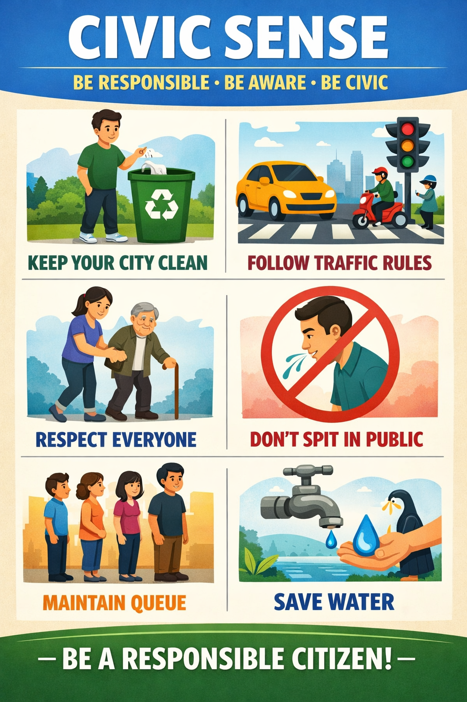
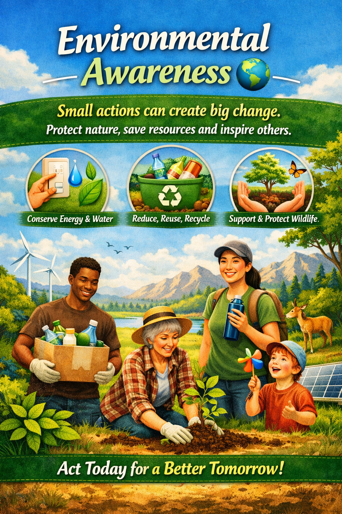
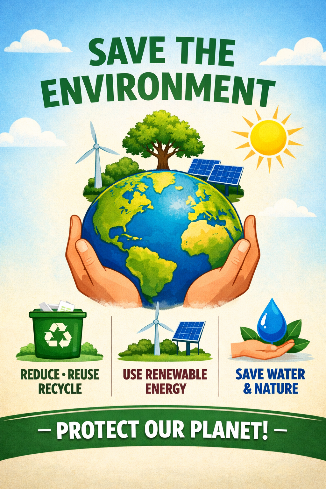

Support Our Mission 💚
Your contribution helps us organize awareness campaigns, cleanliness drives and tree plantation programs.
Goal: ₹50,000

Scan QR To Donate 💚
Greetings. Today, our country is grappling with a truly grave crisis — climate change. Countless people, animals and birds are suffering because of environmental destruction. Green Civic Mission was started with the aim of spreading environmental awareness, encouraging tree plantation, improving civic sense and building a cleaner and greener society. Our mission is not just to work alone, but to inspire everyone to join this movement and become responsible citizens.
Trees Planted
Cleanliness Drives
Joined Volunteers
🌳 Tree Plantation Drives
🧹 Public Cleanliness Awareness
🌍 Environmental Awareness Campaigns
👥 Making Responsible Citizens
Every action counts. Here are some inspiring moments promoting environmental awareness, civic responsibility and a greener future.

Small actions can create big change. Protect nature, save resources and inspire others.

Every tree planted today contributes towards cleaner air and a healthier tomorrow.

Civic responsibility begins with us. Together we can build cleaner surroundings.
Your contribution helps us organize awareness campaigns, cleanliness drives and tree plantation programs.
Scan QR To Donate 💚
Receive an official Green Civic Mission certificate with QR verification.
Your environmental work may be featured in our gallery and contribution wall.
Outstanding contributors can be highlighted as Green Heroes.
Connect with volunteers who care about creating a cleaner and greener future.
Get updates about plantation drives, awareness programs and community activities.
Be part of meaningful environmental action and inspire others.
Greetings. Today, our country is grappling with a truly dire and grave crisis — the crisis of climate change. Countless people across the globe are losing their lives because of it, and innumerable animals and birds are falling victim to its devastating effects. The situation has become such that we can barely step out of our homes during the intense summer heat. Other living species are rapidly moving towards extinction. Should we simply stand by and let this happen? No — absolutely not. Green Civic Mission was created with the vision of spreading awareness, inspiring citizens to plant trees, maintain cleanliness, improve civic sense, and work together towards protecting our planet. My objective is not to undertake this mission alone, but to unite people and build a strong movement dedicated to creating a cleaner, greener and safer future for coming generations. So join our mission, become a responsible citizen, and help us save our society — and our Earth — before it is too late.
Have you planted trees, cleaned your surroundings, spread awareness or contributed towards protecting the environment? Share your work with Green Civic Mission through photos or videos and get featured on our official website and social media platforms.